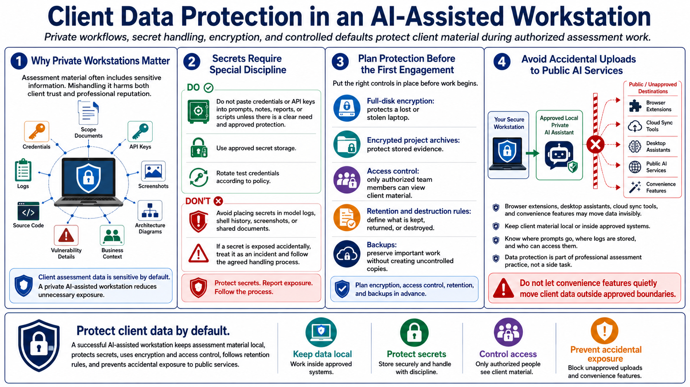

Protecting Client Data and Secrets
Connecting to LMS... Progress: in progress

Narration
Client data protection is one of the strongest reasons to build a private AI-assisted workstation. Assessment material may include scope documents, credentials, API keys, logs, screenshots, source code, architecture diagrams, vulnerability details, and business context. Mishandling that data can harm the client and the assessor even when the technical assessment itself is well performed.
Secrets require special discipline. Credentials and API keys should not be pasted into prompts, reports, notes, or scripts without a clear need and appropriate protection. Use approved secret storage, rotate test credentials according to policy, and avoid placing secrets in model logs, shell history, screenshots, or shared documents. If a secret is accidentally exposed, treat it as an incident and follow the agreed handling process.
Encryption, access control, retention, and backups should be planned before the first engagement. Full-disk encryption protects a lost laptop. Encrypted project archives protect stored evidence. Access controls help ensure only authorized team members can view client material. Retention rules define what should be kept, what should be returned, and what should be destroyed after the engagement. Backups should protect important work without creating uncontrolled copies.
Avoid accidental uploads to public AI services. Browser extensions, desktop assistants, cloud sync tools, and convenience features can move data in ways users do not notice. The workstation should have clear defaults that keep client material local or inside approved systems. Data protection is not a side task; it is part of professional assessment practice.